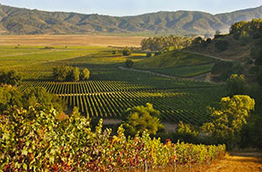

Best Spring Trips 2014
Valletta, Malta
Valletta, capital of the Mediterranean island-state of Malta, covers less than half a square mile. What the city lacks in size it more than makes up for in history. Founded by the Knights of St. John in 1566, Valletta is a World Heritage site and “one of the most concentrated historic areas in the world,” according to UNESCO's website. An astounding 320 monuments are in the walled city, including baroque palaces and cathedrals, most notably St. John's Co-Cathedral, home to Italian artist Caravaggio’s "The Beheading of St. John the Baptist." Intermingled with the monuments are shops, cafés, and the lively Valletta Waterfront on Grand Harbour, a popular Mediterranean port of call for yachtsman and cruise lines. “My favorite place to be in the city is Piazza Regina, or Queen’s Square,” says Maltese native Victoria Bezzina, a Valletta ToursByLocals guide. “I call this the museum of Maltese life, since it’s often the meeting point for local people. If you sit at the outdoor café at Caffe Cordina here, you can watch the people in the piazza walking, chatting, and shopping, and see the children playing in the dancing fountains.”
Casablanca Valley, Chile
The Casablanca Valley’s coastal Mediterranean climate produces foggy mornings; crisp, white wines; and elegant, cool-climate reds. The valley is one of Chile’s fastest growing wine regions. And, since it’s less than an hour’s drive northwest of the capital city of Santiago, Casablanca is well positioned for a day trip or weekend getaway to visit boutique and commercial wineries like Loma Larga and Kingston Family Vineyards. “After you cross the tunnel from Curacavi into Casablanca, you feel like you are in a magic valley,” says Santiago-based tour guide Victor Hugo Tello. “The green carpet of wine grape vineyards climbing into the surrounding mountains and the morning coastal mist make it seem like you’ve entered a fairy tale.” If you’d rather focus on the views and the wine and leave the driving to someone else, book a day or overnight trip with Santiago Adventures. Options include a Casablanca and San Antonio Valley heli-wine tour that combines private tastings and aerial views.